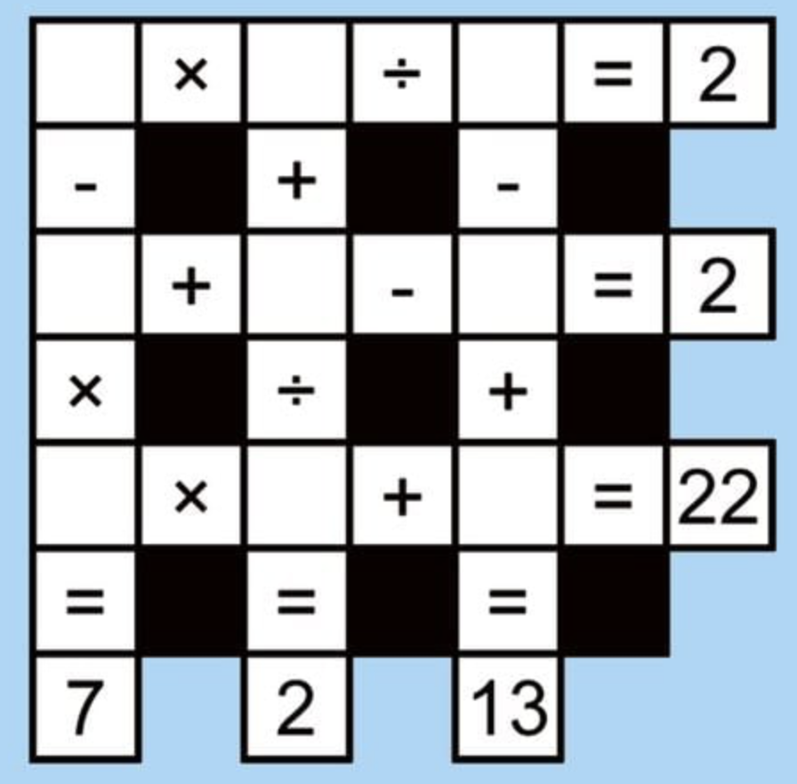
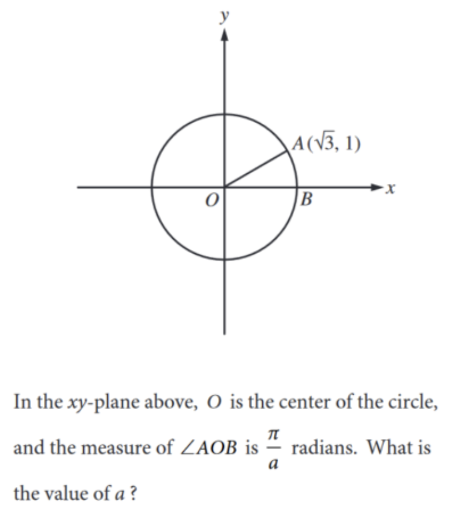
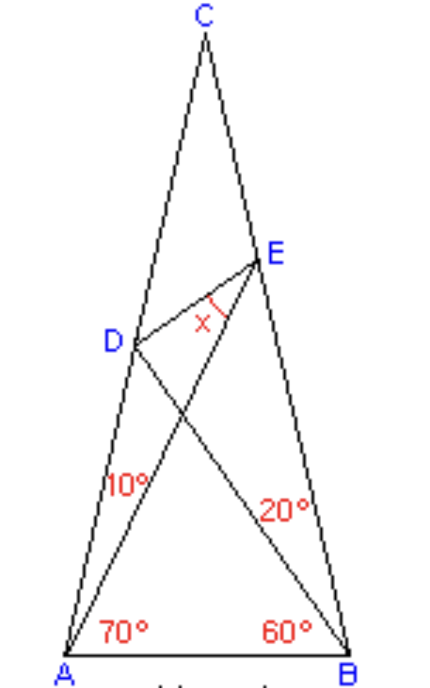
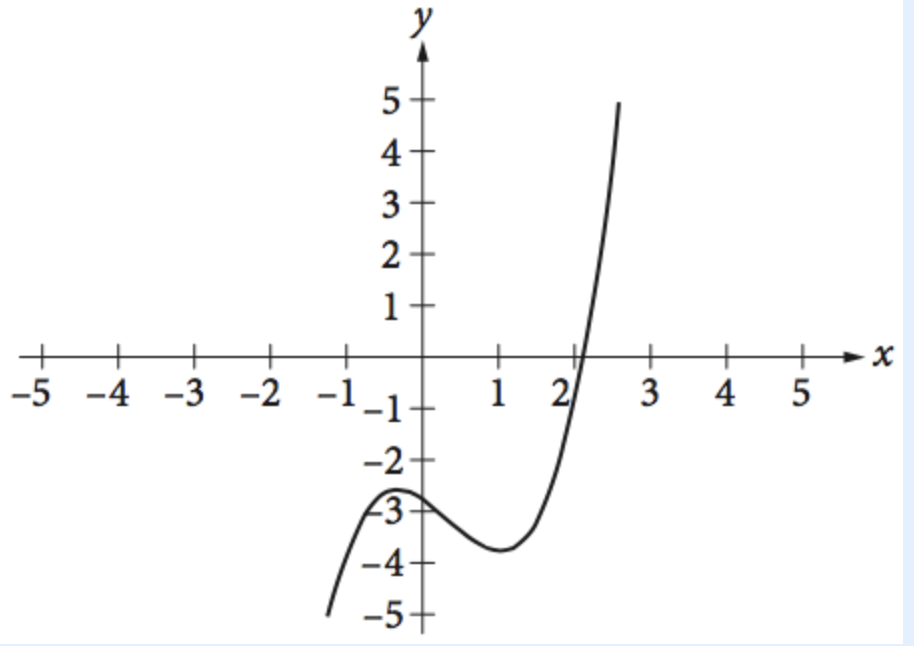
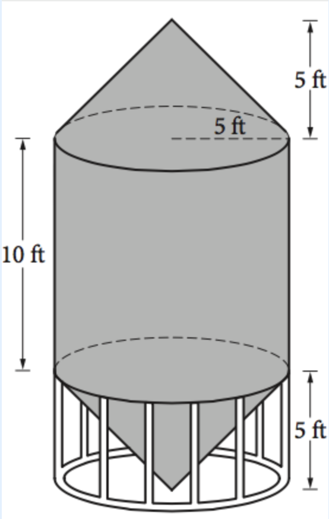
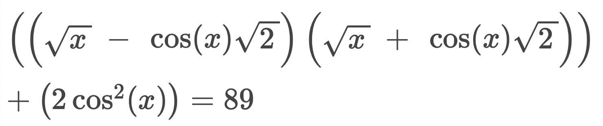

- Find x+y+z, if: 5x+8y=67, 2x-y=31, and z = 75
- Ann and Kate have $80 together to spend on concert tickets. If Kate buys a concert poster for $5, then she will have double the amount of money that Ann has left for merchandise. Dylan has $54 more than Ann to buy albums. How much money does Dylan have?
- Find the value of x in the equation: 5x-((2(x-7))/3)=373
- If x and y are integers and |x - y| = 12, what is the minimum possible value of xy+118?
- (3) ((-2)^2 + 1) = X - 65. Solve for X
- Jack played four drum solos. Ron played twice as many solos. Liam played 73 guitar riffs. How many musical performances did they have in total?
-
For this one, fill in the numbers 1 through 9, using each only once, to make all of the vertical and horizontal equations correct. Then combine the 3 numbers solution in each empty cell in each row to make up a 3 digit number then add each of the 3 3 digit numbers and subtract 1799 by that number to get the final answer.
-
First, determine the value of a a using the equation below where the tempo B is 81 beats per minute. The composition length C in seconds is a+B. What is the value of C?
-
First find the value of X. Then solve for C. C = x + 53.
-
The musical function f(x) represents the sound intensity level in decibels and is defined by the formula f ( x ) = x^3 − x^2 − x − (11/4) , graphed on a time-intensity graph. If k k is a constant representing a specific decibel level such that the equation f ( x ) = k corresponds to three different moments during a song, find the value of k. Given k, the pitch P at those moments can be calculated using P = k + 79. What is the value of P?
- Little's law is applied to a concert venue at the merchandise booth. During the concert, approximately 84 fans per hour make a purchase and each fan spends an average of 5 minutes in line waiting to buy band merchandise. At any time during the concert, about how many fans, on average, are waiting in line to make their purchase at the merchandise booth? Calculate the number and add 69 to it for the final tally.
-
A unique stage set for a music festival is designed to resemble a giant speaker, built from two right circular cones and a right circular cylinder, all fitting together as illustrated in the design diagrams. Which of the following values is closest to the volume of this stage set, in cubic feet?
- 261.8
- 785.4
- 916.3
- 1047.2
- The owner of the Good Tunes Music Shop opens a new branch across town. For the new shop, the owner estimates that during operating hours, an average of 90 customers per hour visit the store, and each of them spends an average of 12 minutes browsing the music collection. The average number of customers in the new music shop at any time is what percent less than the average number of customers in the original music shop at any time? Calculate this percentage and then add 16 to it for the final answer.
- Solve for x.

Previous Answers: